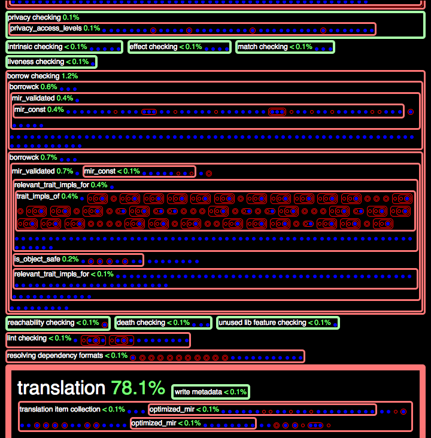

Profiling Queries
In an effort to support incremental compilation, the latest design of the Rust compiler consists of a query-based model.
The details of this model are outside the scope of this document, however, we explain some background of this model, in an effort to explain how we profile its performance. We intend this profiling effort to address issue 42678.
Quick Start
0. Enable debug assertions
./configure --enable-debug-assertions
1. Compile rustc
Compile the compiler, up to at least stage 1:
./x.py build library/std
2. Run rustc, with flags
Run the compiler on a source file, supplying two additional debugging flags with
-Z:
rustc -Z profile-queries -Z incremental=cache foo.rs
Regarding the two additional parameters:
-Z profile-queriestells the compiler to run a separate thread that profiles the queries made by the main compiler thread(s).-Z incremental=cachetells the compiler to "cache" various files that describe the compilation dependencies, in the subdirectorycache.
This command will generate the following files:
profile_queries.htmlconsists of an HTML-based representation of the trace of queries.profile_queries.counts.txtconsists of a histogram, where each histogram "bucket" is a query provider.
3. Run rustc, with -Z time-passes:
- This additional flag will add all timed passes to the output files mentioned above, in step 2. As described below, these passes appear visually distinct from the queries in the HTML output (they appear as green boxes, via CSS).
4. Inspect the output
- 4(a). Open the HTML file (
profile_queries.html) with a browser. See this section for an explanation of this file. - 4(b). Open the data file (
profile_queries.counts.txt) with a text editor, or spreadsheet. See this section for an explanation of this file.
Interpret the HTML Output
Example 0
The following image gives some example output, from tracing the queries of
hello_world.rs (a single main function, that prints "hello world" via the
macro println!). This image only shows a short prefix of the total output; the
actual output is much longer.
 View full HTML output. Note; it could take up to a second to properly render depending on your browser.
Here is the corresponding text output.
Example 0 explanation
The trace of the queries has a formal structure; see Trace of Queries for details.
We style this formal structure as follows:
- Timed passes: Green boxes, when present (via
-Z time-passes), represent timed passes in the compiler. As of January 2021 these passes are not queries, but may be replaced by queries in future versions. - Labels: Some green and red boxes are labeled with text. Where they are
present, the labels give the following information:
- The query's provider, sans its key and its result, which are often too long to include in these labels.
- The duration of the provider, as a fraction of the total time (for the entire trace). This fraction includes the query's entire extent (that is, the sum total of all of its sub-queries).
- Query hits: Blue dots represent query hits. They consist of leaves in the
trace's tree. (CSS class:
hit). - Query misses: Red boxes represent query misses. They consist of internal
nodes in the trace's tree. (CSS class:
miss). - Nesting structure: Many red boxes contain nested boxes and dots. This nesting structure reflects that some providers depend on results from other providers, which consist of their nested children.
- Some red boxes are labeled with text, and have highlighted borders (light red, and bolded). (See heuristics for details).
Heuristics
Heuristics-based CSS Classes:
-
important-- Trace nodes areimportantif they have an extent of 6 (or more), or they have a duration fraction of one percent (or more). These numbers are simple heuristics (hard-coded, but easy to modify). Important nodes are styled with textual labels, and highlighted borders (light red, and bolded). -
frac-50,-40, ... -- Trace nodes whose total duration (self and children) take a large fraction of the total duration, at or above 50%, 40%, and so on. We style nodes these with larger font and padding.
Interpret the Data Output
The file profile_queries.counts.txt contains a table of information about the
queries, organized around their providers.
For each provider (or timed pass, when -Z time-passes is present), we produce:
-
A total count --- the total number of times this provider was queried
-
A total duration --- the total number of seconds spent running this provider, including all providers it may depend on. To get a sense of this dependency structure, and inspect a more fine-grained view of these durations, see this section.
These rows are sorted by total duration, in descending order.
Counts: Example 0
The following example profile_queries.counts.txt file results from running on
a hello world program (a single main function that uses println to print
"hello world").
As explained above, the columns consist of provider/pass, count, duration:
translation,1,0.891
symbol_name,2658,0.733
def_symbol_name,2556,0.268
item_attrs,5566,0.162
type_of,6922,0.117
generics_of,8020,0.084
serialize dep graph,1,0.079
relevant_trait_impls_for,50,0.063
def_span,24875,0.061
expansion,1,0.059
const checking,1,0.055
adt_def,1141,0.048
trait_impls_of,32,0.045
is_copy_raw,47,0.045
is_foreign_item,2638,0.042
fn_sig,2172,0.033
adt_dtorck_constraint,2,0.023
impl_trait_ref,2434,0.023
typeck_tables_of,29,0.022
item-bodies checking,1,0.017
typeck_item_bodies,1,0.017
is_default_impl,2320,0.017
borrow checking,1,0.014
borrowck,4,0.014
mir_validated,4,0.013
adt_destructor,10,0.012
layout_raw,258,0.010
load_dep_graph,1,0.007
item-types checking,1,0.005
mir_const,2,0.005
name resolution,1,0.004
is_object_safe,35,0.003
is_sized_raw,89,0.003
parsing,1,0.003
is_freeze_raw,11,0.001
privacy checking,1,0.001
privacy_access_levels,5,0.001
resolving dependency formats,1,0.001
adt_sized_constraint,9,0.001
wf checking,1,0.001
liveness checking,1,0.001
compute_incremental_hashes_map,1,0.001
match checking,1,0.001
type collecting,1,0.001
param_env,31,0.000
effect checking,1,0.000
trait_def,140,0.000
lowering ast -> hir,1,0.000
predicates_of,70,0.000
extern_crate,319,0.000
lifetime resolution,1,0.000
is_const_fn,6,0.000
intrinsic checking,1,0.000
translation item collection,1,0.000
impl_polarity,15,0.000
creating allocators,1,0.000
language item collection,1,0.000
crate injection,1,0.000
early lint checks,1,0.000
indexing hir,1,0.000
maybe creating a macro crate,1,0.000
coherence checking,1,0.000
optimized_mir,6,0.000
is_panic_runtime,33,0.000
associated_item_def_ids,7,0.000
needs_drop_raw,10,0.000
lint checking,1,0.000
complete gated feature checking,1,0.000
stability index,1,0.000
region_maps,11,0.000
super_predicates_of,8,0.000
coherent_trait,2,0.000
AST validation,1,0.000
loop checking,1,0.000
static item recursion checking,1,0.000
variances_of,11,0.000
associated_item,5,0.000
plugin loading,1,0.000
looking for plugin registrar,1,0.000
stability checking,1,0.000
describe_def,15,0.000
variance testing,1,0.000
codegen unit partitioning,1,0.000
looking for entry point,1,0.000
checking for inline asm in case the target doesn't support it,1,0.000
inherent_impls,1,0.000
crate_inherent_impls,1,0.000
trait_of_item,7,0.000
crate_inherent_impls_overlap_check,1,0.000
attribute checking,1,0.000
internalize symbols,1,0.000
impl wf inference,1,0.000
death checking,1,0.000
reachability checking,1,0.000
reachable_set,1,0.000
is_exported_symbol,3,0.000
is_mir_available,2,0.000
unused lib feature checking,1,0.000
maybe building test harness,1,0.000
recursion limit,1,0.000
write allocator module,1,0.000
assert dep graph,1,0.000
plugin registration,1,0.000
write metadata,1,0.000
Background
We give some background about the query model of the Rust compiler.
Def IDs
In the query model, many queries have a key that consists of a Def ID. The Rust compiler uses Def IDs to distinguish definitions in the input Rust program.
From the compiler source code (compiler/rustc_span/src/def_id.rs):
/// A DefId identifies a particular *definition*, by combining a crate
/// index and a def index.
#[derive(Clone, Eq, Ord, PartialOrd, PartialEq, RustcEncodable, RustcDecodable, Hash, Copy)]
pub struct DefId {
pub krate: CrateNum,
pub index: DefIndex,
}
Queries
A query relates a key to a result, either by invoking a provider that computes this result, or by reusing a cached result that was provided earlier. We explain each term in more detail:
- Query Provider: Each kind of query has a pre-defined provider, which
refers to the compiler behavior that provides an answer to the query. These
providers may nest; see trace of queries for more
information about this nesting structure.
Example providers:
typeck-- Typecheck a Def ID; produce "tables" of type information.borrowck-- Borrow-check a Def ID.optimized_mir-- Generate an optimized MIR for a Def ID; produce MIR.- For more examples, see Example 0.
- Query Key: The input/arguments to the provider. Often, this consists of a particular Def ID.
- Query Result: The output of the provider.
Trace of Queries
Formally, a trace of the queries consists of a tree, where sub-trees represent sub-traces. In particular, the nesting structure of the trace of queries describes how the queries depend on one another.
Even more precisely, this tree represents a directed acyclic graph (DAG), where shared sub-graphs consist of tree nodes that occur multiple times in the tree, first as "cache misses" and later as "cache hits".
Cache hits and misses. The trace is a tree with the following possible tree nodes:
- Query, with cache miss: The query's result is unknown, and its provider runs to compute it. In this case, the dynamic extent of the query's trace consists of the traced behavior of its provider.
- Query, with cache hit: The query's result is known, and is reused; its provider does not rerun. These nodes are leaves in the trace, since they have no dynamic extent. These leaves also represent where the tree, represented as a DAG, would share a sub-graph (namely, the sub-graph of the query that was reused from the cache).
Tree node metrics. To help determine how to style this tree, we define the following tree node metrics:
- Depth: The number of ancestors of the node in its path from the tree root.
- Extent: The number of immediate children of the node.
Intuitively, a dependency tree is "good" for incremental caching when the depth and extent of each node is relatively small. It is pathological when either of these metrics grows too large. For instance, a tree node whose extent consists of 1M immediate children means that if and when this node is re-computed, all 1M children must be re-queried, at the very least (some may also require recomputation, too).
External Links
Related design ideas, and tracking issues:
- Design document: On-demand Rustc incremental design doc
- Tracking Issue: "Red/Green" dependency tracking in compiler
More discussion and issues: